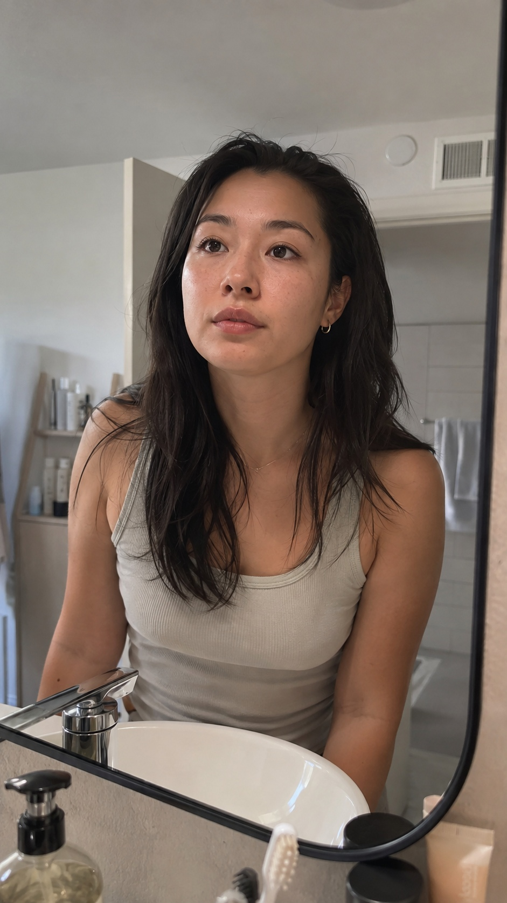
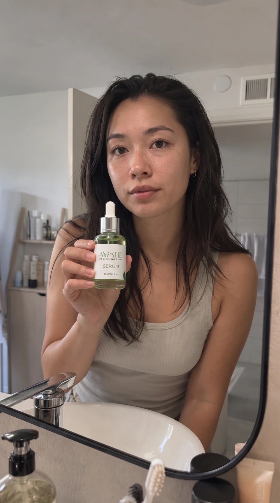
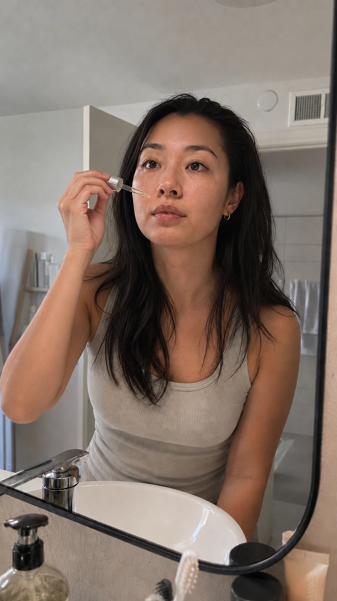
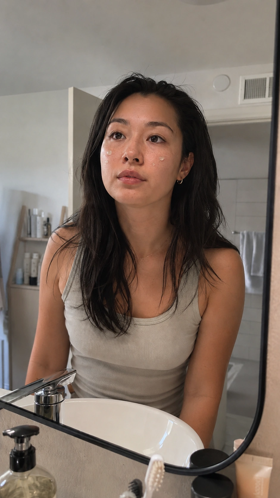

Videos
Ayone
An AI-generated UGC-style video for Ayone Serum, built from a single model image, animated beat by beat, and cut together into one clip.

(01) — The process
The Process
I started by generating one base model image in ChatGPT, then used that same model to generate a separate reference image for each beat the video needed: holding the product, applying a drop, rubbing it in. Each reference image went into Google Flow to generate a short clip, and all the clips were then cut and edited together in CapCut into one continuous ad.
(02) — The model
The Model
Everything starts with this one image. Since the opening and closing shots are really the same beat, just before and after, I generated both the "checking her face in the mirror" clip and the "checking her face after applying serum" clip from this single base image, so the model stays consistent from the first frame to the last.
The base model image, generated once and reused for both bookend shots.
Opening clip, generated from the base image: checking her face in the mirror.
Closing clip, generated from the same base image: checking her face after using the serum.
(03) — The reveal
The Reveal
For the product reveal, I generated a reference image of the model holding the Ayone Serum bottle, matching it against a clean shot of the actual product so the label and bottle shape carried over correctly into the generated clip.

Reference image of the model holding the product.

The actual product shot, used to keep the bottle accurate in the generated clip.
The generated clip: she shows the product to camera, then opens it.
(04) — The application
The Application

Reference image for the drop application, dropper close to her face.
The generated clip: applying a drop of serum to both sides of her face.
(05) — Working it in
Working It In

Reference image with the serum drops visible on her skin.
The generated clip: rubbing the serum into her face.
(06) — The final cut
The Final Cut
All five clips came together in CapCut, trimmed and sequenced into one continuous ad, mirror check, product reveal, application, rub-in, and the after shot.
The final edited video.